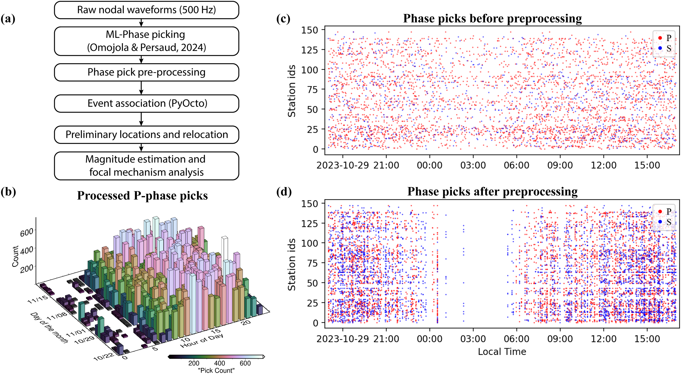
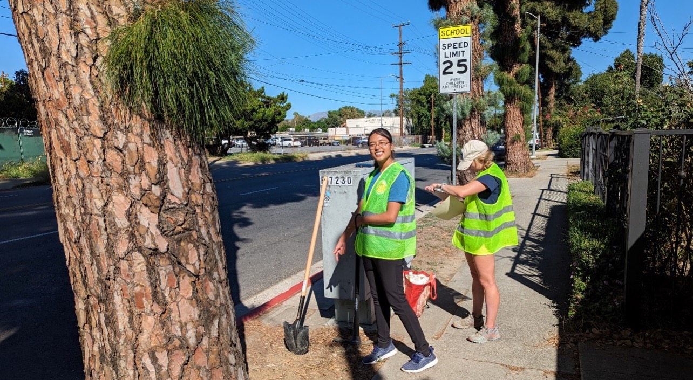

Persaud Lab
San Fernando Valley, California Nodal Array
Detecting earthquakes and estimating earthquake ground motions in urban environments is challenging due to elevated anthropogenic noise and site accessibility constraints. Southern California is susceptible to seismic hazards, primarily due to numerous active faults (Figure 1) and the strong amplification effects of deep sedimentary basins. In the San Fernando Valley, events like the 1994 Mw 6.7 Northridge earthquake that occurred on a blind thrust fault resulted in significant damage (Fuis et al., 2003). Sparse regional monitoring (SCEDC network) and urban noise can limit the detection of microearthquakes (M<3), potentially obscuring fine-scale fault activity and our ability to resolve sedimentary basin structure. Our work addresses these gaps by demonstrating how: i) dense seismic arrays can resolve seismicity that directly informs high-resolution fault mapping at <5-km scale (this study is summarized below) and ii) improve urban seismic velocity models.

FIG. 1 Map of Southern California showing seismicity (M<2.5; Hauksson et al., 2012). Events in color are associated with blind faults within sedimentary basins. Major earthquakes in the San Fernando Valley are shown as red stars. Fault traces are from the SCEC CFM (Marshall et al., 2023).
With assistance from a group of volunteers, we installed a 140-station nodal array (0.3-2.5 km spacing) across the San Fernando Valley in October 2023. Using ML-based event detection (Omojola and Persaud, 2024) and a multi-step event association workflow (Figure 2), we filtered our initial picks to improve processing efficiency before event association.

FIG. 2 (a) Methodology workflow showing the steps used to generate our local catalog. (b) Diurnal variations in phase picks throughout the recording period showing correlation with day and nighttime urban activity (c-d) Phase detections before and after preprocessing across all stations on October 29-30, 2023.
We identified 62 earthquakes in the one-month period with magnitudes ranging between ML 0.04 to 4.0 (Figure 3). Events are clustered around known fault traces at depths between 6–25 km. Cluster 1 in our catalog is located along an unmapped fault zone on the southern edge of the Valley (Figure 3). Focal mechanisms from an ML 1.48 event along this fault zone reveal an oblique strike-slip fault dipping at 71-72˚. Relocated seismicity (Hauksson et al., 2012) delineates a 5.3 km by 4 km active area along the fault. This region has exhibited persistent seismicity since 1980, including a MB 4.4 event.
We detected twice as many events compared to the SCEDC catalog, suggesting regional catalog incompleteness for small magnitude events and highlighting the need for improved station coverage near the cluster 1 fault zone.

FIG. 3 Map of the San Fernando Valley showing our dense nodal array and earthquake catalog as stars. Major faults (Marshall et al., 2023), faults (black dashed–dotted lines) from Juárez-Zúñiga and Persaud (2025), M<2.5 earthquakes (Hauksson et al., 2012), and focal mechanisms for older earthquakes (USGS, 2025) are shown. MHF, Mission Hills fault; ORFZ, Oak Ridge fault zone or Northridge thrust; SAF, San Andreas fault; SFF, San Fernando fault; SGFZ, San Gabriel fault zone; SMFZ, Sierra Madre fault zone; SS, Santa Susana fault.
- Dense nodal arrays offer a practical solution, providing unobtrusive, high-density coverage that enables enhanced hypocenter relocations and focal mechanism determination for microearthquakes (M<4).
- In the San Fernando Valley, we observed better phase arrival alignment for event locations calculated using our array (Figure 4).
- Enhanced detection of microearthquakes with our array improved fault characterization by providing tighter constraints on fault geometry, kinematics, and seismic activity.
- Our results provide insights beyond event detection and location. While previous analyses of San Fernando Valley fault activity have emphasized shallow (<5 km) crustal structures (Langenheim et al., 2011), most large-magnitude events nucleated on deeper faults (>10 km) where fault geometry remains poorly constrained.
- Analysis of relocated catalogs spanning 1980-2018 (Hauksson et al., 2012) reveals a 20 km long antithetic fault segment beneath the Oakridge fault zone.
- Such multi-fault interactions can amplify damage during large earthquakes and must be incorporated into ground motion simulations to improve hazard assessments.

FIG. 4 Body wave phase arrivals (P-wave red and S-wave blue) for M1.48 event from cluster 1. Hypocenter comparison shows more accurate phase arrivals for locations computed using our array. Event locations are shown in Figure 3.
- Dense nodal arrays are useful for monitoring urban seismicity.
- We identified an unmapped fault zone in the southern San Fernando Valley from one month of monitoring with our dense nodal array.
- We also identified seismic monitoring gaps and multi-fault interactions that can impact seismic hazards around the Valley.
- Our methodology provides a framework for improving seismic hazard assessment in other urban settings where conventional monitoring is limited by sparse coverage and elevated noise levels.

We thank the San Fernando Valley residents who hosted the seismic stations and the deployment and pickup teams. The seismic instruments were provided by the EarthScope Consortium/Incorporated Research Institutions for Seismology (IRIS) through the Instrument Center at New Mexico Tech.
References
- Fuis et al. (2003). Fault systems of the 1971 S. Fernando and 1994 Northridge earthquakes, S. Calif., Geology, 31(2), 171-174.
- Marshall et al. (2023). SCEC Community Fault Model (CFM), doi:10.5281/zenodo.8327463.
- Omojola, J. & P. Persaud (2024). Monitoring salt domes used for energy storage with microseismicity: Insights for a Carbon-Neutral Future, Geochem. Geophys. Geosys. 25, e2024GC011573, doi:10.1029/2024GC011573.
- Hauksson, Yang & Shearer (2012). Waveform reloc. eq. cat. for S. California (1981 to June 2011), BSSA. 102, no. 5, 2239–2244.
- USGS (2025). Catalog webservice for recent and historic significant earthquakes (last accessed June 2025).
- Juárez-Zúñiga, A. & P. Persaud (2025). New insights into the crustal structure of the San Fernando Valley, California, from a Dense nodal seismic array, Seismol. Res. Lett. doi: 10.1785/0220240473.
- Langenheim et al.(2011). Structure of the San Fernando Valley region, California: Implications for seismic hazard and tectonic history, Geosphere 7, no. 2, 528–572.